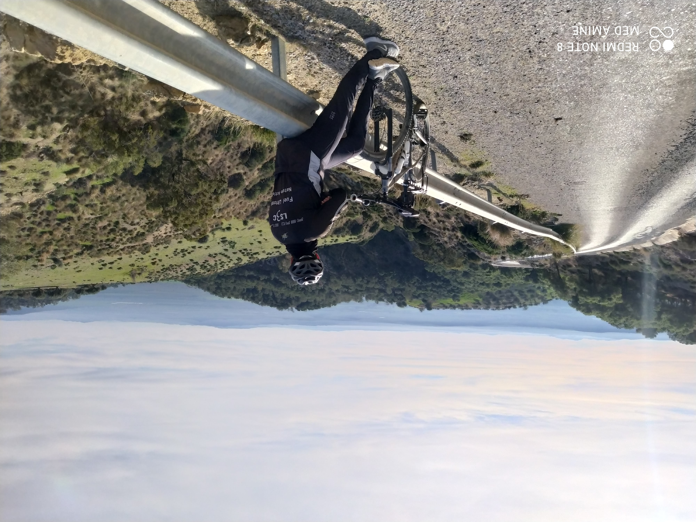

Présentation
Je vous presente Oueslati Mohamed amine jeune developpeur et futur ingenieur
j'ai 31 ans et j'habite à Tebourba
j'ai eux ma licence en biotechnologie applique au secteur pharmaceutique
Expériance professionnelle
Au début, j'ai occupée une poste de technicien supérieur de production pendant 4 ans puis un responsable de production dans le méme entreprise Les Moulins Mahjoub jusqu'a fin october 2022
Pour mieux connaitre l'activité de cette entreprise visiter leur site:Les Moulin Mahjoub
Mes hobbies
De nature je suis un joueur de Handball.J'ai jouée avec le HBCT pendant 13 ans et malhereusment j'ai terminé mon carriére à l'age de 24 ans à cause d'une bleussure grave,luxation du tendant pirognier, au niveau de cheuvis droite
En 2019, j'ai achetée mon premiére vélo de la fameuse marque Serious, j'ai courir plus que 20 miles km dans notre belle pays.
Il existe plusieurs type de velo tout dépond de notre objectif:
- Cyclotourisme:
C'est le tourisme à bicyclette.On peut faire une trip à vélo pendant 6,10 ans ou plus tout dépond du disponnibilité du cyclistes.
Aussi, il combinne plusieurs culture au meme temps bien sur faire de velo et rondonné avec la culture de Camping.
- Velo de route
Ce sont les vélo de course par exemple:Tour de France, GIRO,VUELLTA...
- Velo tout terrain
Moi meme j'ai fait ce type de velo pour le loisirs et le déffoulement

Montagne de l'anssarine Tebourba